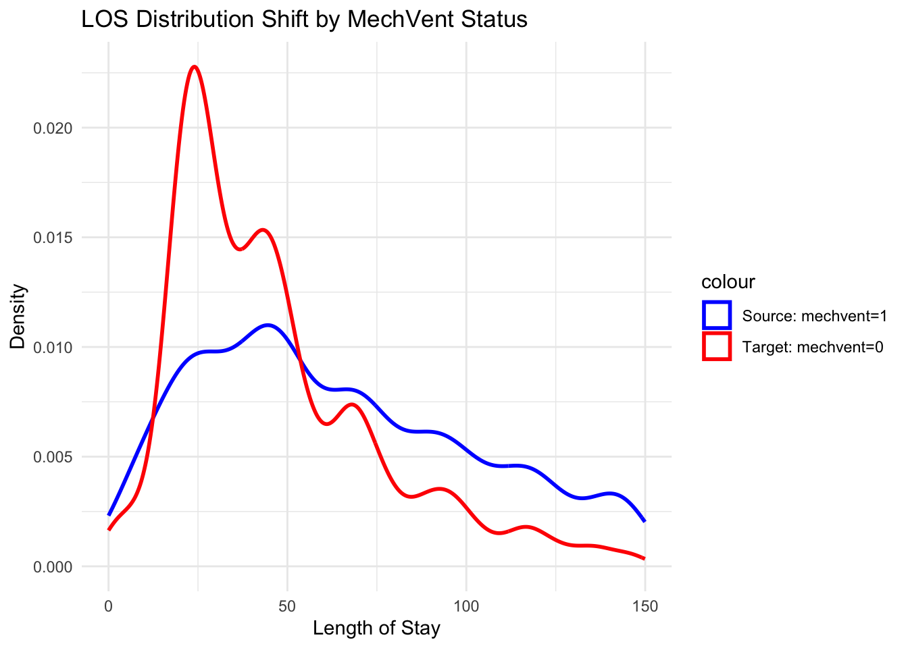

\(\omega(X) = \frac{p_T(X)}{p_S(X)}\)
We simulate source and target marginal input(X) distribution:
\(X_{Source} \sim N(0, 1)\)
\(X_{Target} \sim N(2, 1)\)
set.seed(123)
# Simulate Source and Target Data
n_source <- 1000 # Number of source samples
n_target <- 400 # Number of target samples
# Source domain: X ~ N(0, 1)
X_source <- rnorm(n_source, mean = 0, sd = 1)
# Target domain: X ~ N(2, 1)
X_target <- rnorm(n_target, mean = 2, sd = 1)
# Conditional distribution: Y = 3X + epsilon, epsilon ~ N(0, 1)
epsilon_source <- rnorm(n_source, mean = 0, sd = 1)
epsilon_target <- rnorm(n_target, mean = 0, sd = 1)
# Combine into data frames
source_data <- data.frame(X = X_source, Domain = "Source")
target_data <- data.frame(X = X_target, Domain = "Target")
# Estimate Densities Separately using MLE (Parametric)
# Assuming Gaussian distribution for both source and target
# Fit Gaussian to Source X
fit_source_gaussian <- fitdistr(source_data$X, densfun = "normal")
mu_source <- fit_source_gaussian$estimate["mean"]
sigma_source <- fit_source_gaussian$estimate["sd"]
# Fit Gaussian to Target X
fit_target_gaussian <- fitdistr(target_data$X, densfun = "normal")
mu_target <- fit_target_gaussian$estimate["mean"]
sigma_target <- fit_target_gaussian$estimate["sd"]
# Display estimated parameters
library(tibble)
comparison_table <- tibble(
Statistic = c("Mean", "Standard Deviation"),
Source = c(mu_source, sigma_source),
Target = c(mu_target, sigma_target)
)
knitr::kable(comparison_table)| Statistic | Source | Target |
|---|---|---|
| Mean | 0.0161279 | 2.0095036 |
| Standard Deviation | 0.9911990 | 0.9937985 |
# Compute Density Ratios (Weights)
# Using Gaussian density functions
p_source <- dnorm(source_data$X, mean = mu_source, sd = sigma_source)
p_target <- dnorm(source_data$X, mean = mu_target, sd = sigma_target)
weights <- p_target / p_source
# Add weights to source data
source_data$weight <- weights
# Visualizations
# a. Density Plots of X in Source and Target Domains
density_plot <- ggplot() +
geom_density(data = source_data, aes(x = X, color = "Source")) +
geom_density(data = target_data, aes(x = X, color = "Target")) +
labs(title = "Density plot of X",
x = "X", y = "Density") +
scale_color_manual(values = c("Source" = "blue", "Target" = "red")) +
theme_minimal()
# b. Weighted Density Plot of X in Source and Target Domains
weighted_density_plot <- ggplot() +
geom_density(data = source_data, aes(x = X, weight = weight, color = "Weighted Source")) +
geom_density(data = target_data, aes(x = X, color = "Target")) +
labs(title = "Density plot of X",
x = "X", y = "Density") +
scale_color_manual(values = c("Weighted Source" = "blue", "Target" = "red")) +
theme_minimal()
# Arrange the plots in a 2x2 grid
grid.arrange(
density_plot, weighted_density_plot,
ncol = 2
)We can tell this MLE estimation does not perform well. The weight only centered source X at target X’s mean. However, the reweighted distribution becomes overly concentrated, especially around X=2, where the target density peaks. This leads to a narrower spread in the weighted source, failing to capture the full variability of the target distribution.
In other words, although the mean alignment looks successful, the variance is underestimated. This happens because importance weights tend to emphasize regions where \(p_{target}(X)\) is high — but if the source has few samples in that region, the same few points get upweighted excessively, artificially inflating their density and collapsing the overall shape.
You can use the code and play with difference parametric distributions to see how does the weighting process perform.
We use real-life EHR data:
Source Domain (X_source): Length of Stay for patient
who experienced machine ventilation.
Target Domain (X_target): Length of Stay for patient
who did NOT experience machine ventilation.
For univariate Kernel Density Estimation, we use
kdensity:
library(tidyverse)## ── Attaching core tidyverse packages ──────────────────────── tidyverse 2.0.0 ──
## ✔ forcats 1.0.0 ✔ readr 2.1.5
## ✔ lubridate 1.9.3 ✔ stringr 1.5.1
## ✔ purrr 1.0.4 ✔ tidyr 1.3.1
## ── Conflicts ────────────────────────────────────────── tidyverse_conflicts() ──
## ✖ gridExtra::combine() masks dplyr::combine()
## ✖ dplyr::filter() masks stats::filter()
## ✖ dplyr::lag() masks stats::lag()
## ✖ MASS::select() masks dplyr::select()
## ℹ Use the conflicted package (<http://conflicted.r-lib.org/>) to force all conflicts to become errorslibrary(ggplot2)
library(dplyr)
library(kdensity)
dat <- read_csv("./data/data_forSDE.csv")## Rows: 13953 Columns: 4
## ── Column specification ────────────────────────────────────────────────────────
## Delimiter: ","
## dbl (4): los, mechvent, age, heartrate
##
## ℹ Use `spec()` to retrieve the full column specification for this data.
## ℹ Specify the column types or set `show_col_types = FALSE` to quiet this message.source_data <- dat %>%
filter(mechvent == 1, los < 150) %>%
dplyr::select(los) %>%
drop_na()
target_data <- dat %>%
filter(mechvent == 0, los < 150) %>%
dplyr::select(los) %>%
drop_na()
# Estimate densities
source_pdf <- kdensity(source_data$los, kernel = "gaussian", bw = "nrd0")
target_pdf <- kdensity(target_data$los, kernel = "gaussian", bw = "nrd0")
# Compute density ratio weights
epsilon <- 1e-5
p_source <- source_pdf(source_data$los)
p_target <- target_pdf(source_data$los)
weights <- p_target / (p_source + epsilon)
# Plot
ggplot() +
geom_density(aes(x = los, color = "Source: mechvent=1"), data = source_data, size = 1) +
geom_density(aes(x = los, color = "Target: mechvent=0"), data = target_data, size = 1) +
labs(title = "LOS Distribution Shift by MechVent Status", x = "Length of Stay", y = "Density") +
scale_color_manual(values = c("Source: mechvent=1" = "blue", "Target: mechvent=0" = "red")) +
theme_minimal()## Warning: Using `size` aesthetic for lines was deprecated in ggplot2 3.4.0.
## ℹ Please use `linewidth` instead.
## This warning is displayed once every 8 hours.
## Call `lifecycle::last_lifecycle_warnings()` to see where this warning was
## generated.
ggplot() +
geom_density(aes(x = los, weight = weights, color = "Weighted Source (mechvent=1)"), data = source_data, size = 1) +
geom_density(aes(x = los, color = "Target (mechvent=0)"), data = target_data, size = 1) +
scale_color_manual(values = c("Weighted Source (mechvent=1)" = "blue", "Target (mechvent=0)" = "red")) +
labs(title = "LOS: Weighted Source vs. Target (MechVent)", x = "Length of Stay", y = "Density") +
theme_minimal()Separate Density Estimation was introduced only to provide intuitions for importance weighting method that this weight refers to the ratio between probability of data points follows target and source distribution \(\frac{p_T(X)}{p_S(X)}\).
This method is not practical because it suffers from multivariate data and worse smoothness problem(Page. 23)
# Sample data
set.seed(2)
data <- rnorm(100, mean = 5, sd = 1)
bandw <- 0.35
# Plot histogram + KDE
hist(data, breaks = 15, probability = TRUE,
col = rgb(0.8, 0.8, 1, 0.5),
main = "Histogram vs Kernel Density",
xlab = "X", border = "white")
# Add KDE line
lines(density(data, bw=bandw), col = "darkblue", lwd = 2)
# Add KDE bumps for 10 data points
sample_points <- sort(sample(data, 10))
bandwidth <- bandw
for (x0 in sample_points) {
curve(dnorm(x, mean = x0, sd = bandwidth)/length(data),
add = TRUE, col = "gray70", lty = 2)
}
legend("topright", legend = c("KDE", "Histogram", "Individual Kernels"),
col = c("darkblue", rgb(0.8, 0.8, 1), "gray70"),
lty = c(1, NA, 2), lwd = c(2, NA, 1), pch = c(NA, 15, NA), pt.cex = 2)